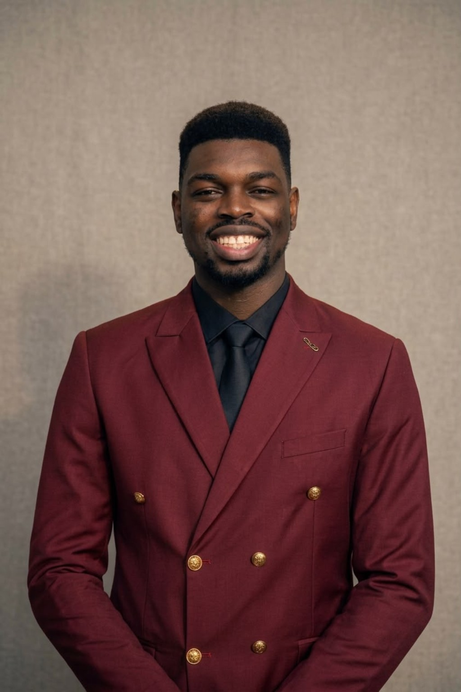

Chairman of the Board of Governors

The people serving the Damaris Foundation for Premature Infants.
Our team brings together leadership, professional experience, healthcare knowledge, creativity and service.

Enioluwa Olaniyi-George, RN, RPHN, BNSc is a registered nurse and public health nurse with a passion for clinical care, public health, emergency nursing, and health education. He has received clinical training across medical-surgical nursing, maternal and child health, mental health, and community health settings. Beyond nursing, Enioluwa is actively involved in music and leadership, having served in various leadership roles within his university choir and musicians’ community. He is passionate about continuous learning, service, and using his skills to make a meaningful impact in healthcare and society.
Find out how you can support the work of the Damaris Foundation for Premature Infants.